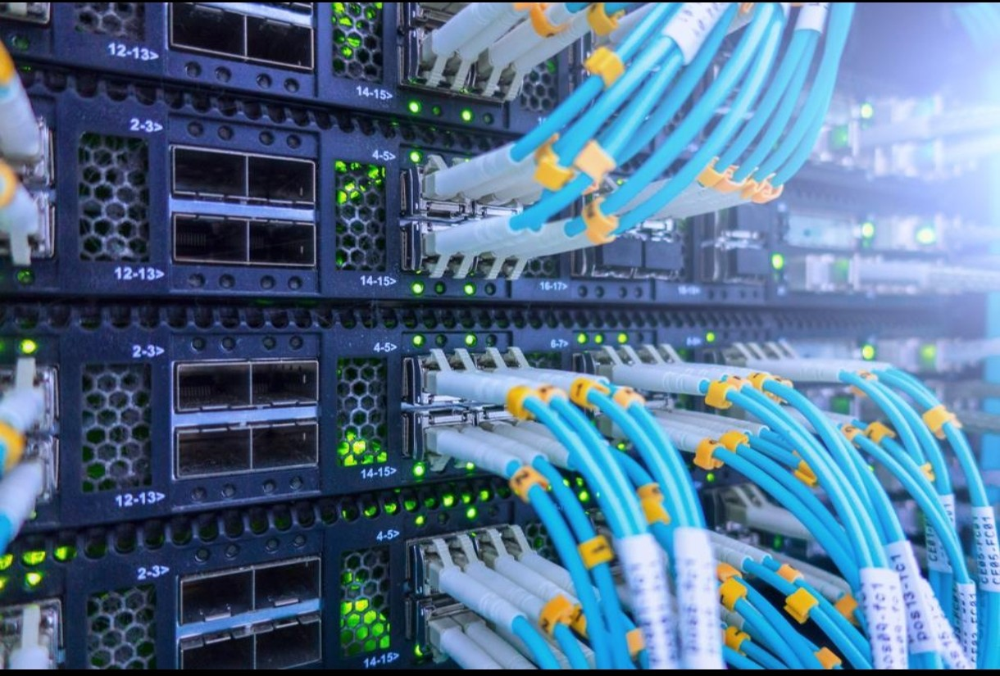
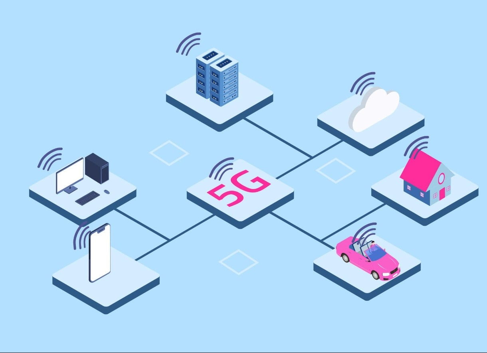

Redes no mundo atual
Redes cabeadas
As redes cabeadas utilizam meios físicos para transmitir informações. A Ethernet é um dos principais exemplos, sendo utilizada em computadores, servidores e redes empresariais.
A fibra óptica também é extremamente importante atualmente, principalmente para conexões de longa distância e Internet de alta velocidade.

Redes sem fio
O Wi-Fi permite conectar dispositivos sem a necessidade de cabos. Desde o primeiro padrão IEEE 802.11, lançado em 1997, a tecnologia evoluiu significativamente. Atualmente existem gerações muito mais rápidas e eficientes.
São disponibilizados:- Wi-Fi
- Wi-Fi 4
- Wi-Fi 5
- Wi-Fi 6
- Wi-Fi 6E
- Wi-Fi 7
Redes móveis
As redes celulares também passaram por várias gerações:
- 1G
- 2G
- 3G
- 4G
- 5G
Cada geração aumentou as possibilidades de comunicação, velocidade e quantidade de dispositivos conectados.
O 5G, por exemplo, foi projetado não apenas para celulares, mas também para aplicações envolvendo Internet das Coisas, indústria, veículos conectados e automação.

Internet das Coisas — IoT
A Internet das Coisas (IoT) representa a conexão de objetos físicos à Internet.
Exemplos:- Relógios inteligentes;
- Câmeras;
- Lâmpadas;
- Sensores;
- Eletrodomésticos;
- Veículos;
- Equipamentos industriais.
Ou seja: a rede deixou de conectar somente computadores e passou a conectar praticamente qualquer tipo de dispositivo.
Computação em nuvem
Outra transformação importante foi a computação em nuvem. Em vez de manter todos os dados e programas no próprio dispositivo, usuários e empresas podem utilizar servidores remotos conectados pela Internet. Serviços de armazenamento, streaming, jogos on-line e diversas aplicações modernas dependem dessa infraestrutura.
E o futuro? O que Esperar Dele?
As pesquisas atuais buscam redes cada vez mais rápidas, eficientes, confiáveis e capazes de conectar uma quantidade ainda maior de dispositivos. Uma das principais áreas de pesquisa é o 6G como tecnologia que pode está acaminho de ser desenvolvida, próxima geração das redes móveis. A expectativa é que essa tecnologia possibilite novas aplicações envolvendo inteligência artificial, Internet das Coisas, comunicação imersiva e sistemas altamente conectados.